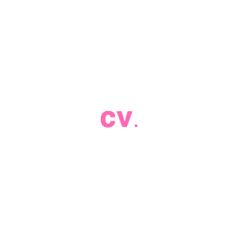
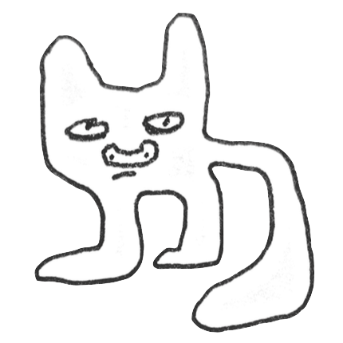
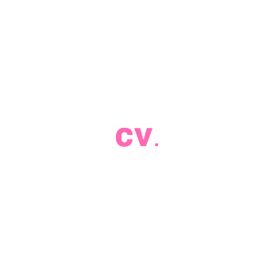
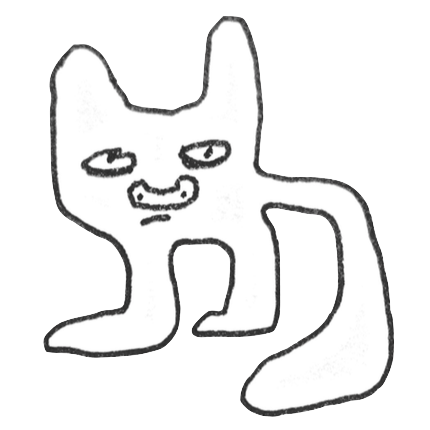

Editor, CraftWW McCann
Freelance
Cut internal pitch videos/case studies. Sourced media, motion gfx.
Assistant Editor, M ss ng P eces
December 2016 - March 2018
Edited, Conformed, and delivered spots for major brands such as Facebook, Google, and Spotify. Managed and collaborated with multiple editors as well as external vendors to ensure smooth workflow between parties. Familiar with 360° VR video, AR, and interactive workflows. Maintained client-facing edit suites, project archives and edit server.
Cinefex Magazine: Into the Unknown Feature
October 2016
Photos featured in Cinefex magazine for article on film "Into the Unknown"
Patti Cake$
October 2016
Production Assistant for Sundance 2017 selected film. Coordinated company moves and purchase orders. Drove a 1970’s Cadillac DeVille across the GW bridge at rush hour unscathed.
Looking China Fujian
Xiamen, China June 2016
Wrote and directed short documentary "Very Good Paint" about the oil painting industry in South China. Shot in Xiamen, China with translator.
Nathan For You, Absolutely Productions
Los Angeles, CA Jan. – July 2015
Production Assistant in office and on set for Comedy Central show Nathan For You. Began as an intern; promoted mid-season to PA. Assisted locations and art departments. Facilitated multiple company moves per day.
With Bob & David, Absolutely Productions
Los Angeles CA, May 2015
Production Assistant for live tapings of Netflix Special, With Bob & David.
Into the Unknown, Court 13 Collective
Great Barrington MA, Jun – Aug. 2014
Production Assistant for special effects unit. Worked alongside producers from film Beasts of the Southern Wild and under the guidance of Doug Trumbull (effects supervisor for 2001: A Space Odyssey). Assisted in creation of both practical and digital effects. Designed waterproof cloud tank lights and made rough composites in After Effects.
Roast of Neil Patrick Harris, Charles River Media
Cambridge MA, Jan. 2014
Assistant Sound Tech for the filming of Harvard’s Hasty Pudding theatre company’s event.
LSST Lab, Univ. of Pennsylvania High Energy Physics
Phila PA, June – Aug. 2013 Lab Assistant for Large Synoptic Survey Telescope.
Conducted initial noise tests on telescope’s photo processing board. Soldered custom circuit board connectors. Wrote Python scripts to graph noise under various conditions. Collaborated with Brookhaven National Labs and Stanford SLAC.
Shellbark Hollow Goat Farm,
East Goshen PA, May – July 2012
Tended 40 Nubian goats, milking, cheese making, and selling cheese at farmers markets.
 


